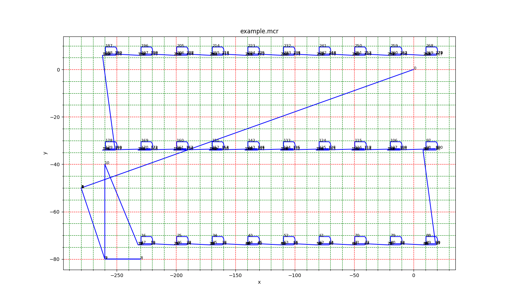

Project
My company owns a couple of CNC machines from the company Datron, which are used for automated dispensing of adhesives on our products. They are quite robust and reliable, but their programming is a nightmare. Especially when you need to minimize the downtime caused by programming directly on the machine and you cannot allow for mistakes, because the produced quantities are high.
This is why I decided to write a script, which reads in the CNC program and plots the trajectories the dispensing head follows. In this way you can easily check whether the changes you made in the program offline make sense and thus mitigate the risk of crash.
The aim of this project is being able to visualise and verify what your CNC script makes the machine do. It therefore does not replace the need to learn the CNC commands, yet it makes the learning process significantly easier and less costly. In addition, it makes the comparison of different CNC programs and version management a matter of seconds.

Usage
To be able to use my simulation library you need a program you want to visualise first. These programs are stored in the Datron CNC machine file structure as .MCR files. If you just want to try it, you may as well use the sample MCR file I provide on my Github.
My script is distributed as a Python 3 library. Copy the file datron_animator.py into your working folder. There create a new Python script, where you include following lines:
import datron_animator
a = Datprog("example.mcr") #generate Datron Object
plot_path(a, "y", "x") #plot path - y axis on y axis and x axis on x axis
anim(a,100) #animate path 10 frames per second
The program has the following dependencies (libraries you need to install first):
matplotlib
pandas
numpy
Get the code and a sample Datron MCR File from my Datron Animator Github repository
Example
This is an example of output for an example product. It shows the trajectories the dispensing head moves along. In this case, the program consists of applying dispensing material on 29 products after some motions during the start-up (measurement of magazine height) and cleaning the dispensing needle. Along with this graph output, my script also outputs a list of coordinates and a motion animation.
